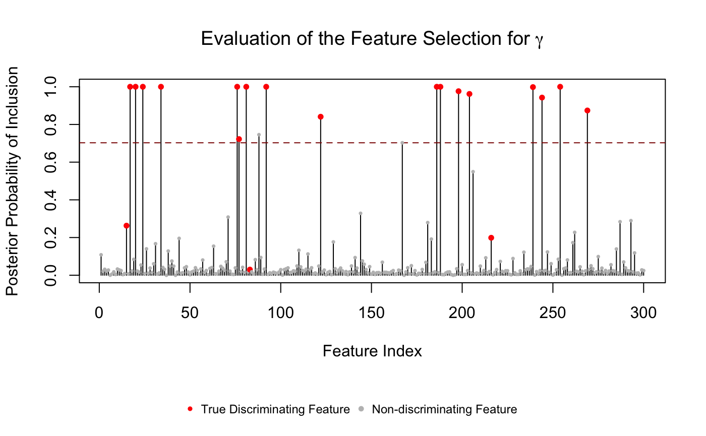
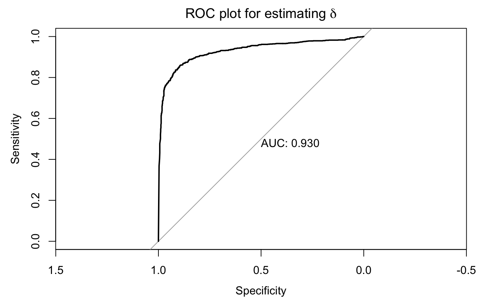

Tutorial.RmdThe following script is used to fit micribiome count data and covariate data to the integrative Bayesian zero-inflated negative binomial hierarchical mixture model proposed in the manuscript
Before running the following code, please first load micribiome count data and covariate data. The necessary inputs should be
You also need to install Rcpp, RcppArmadillo and pROC packages.
library(IntegrativeBayes)
#> Loading required package: pROC
#> Warning: package 'pROC' was built under R version 3.5.2
#> Type 'citation("pROC")' for a citation.
#>
#> Attaching package: 'pROC'
#> The following objects are masked from 'package:stats':
#>
#> cov, smooth, var
load(system.file("extdata/Example_data.Rdata", package = "IntegrativeBayes"));# keep the features that have at least 2 observed counts for both groups:
Y.input = Y.filter(Y.mat, zvec = z.vec, min.number = 2)[[2]]
#> 300 out of 300 features are kept.
# estimate the size factor s from the count matrix Y:
s.input = sizefactor.estimator(Y.mat)feature.remain = which(Y.filter(Y.mat, zvec = z.vec, min.number = 2)[[1]] == 1)
#> 300 out of 300 features are kept.
gamma.vec = gamma.vec[feature.remain]
delta.mat = delta.mat[,feature.remain]S.iter = 10000
burn.in = 0.5
mu0.start = 10
res = zinb_w_cov(Y_mat = Y.input,
z_vec = z.vec,
s_vec = s.input,
X_mat = X.mat,
S = S.iter, burn_rate = burn.in,
mu0_mean = mu0.start)
#> 0% has been done
#> 10% has been done
#> 20% has been done
#> 30% has been done
#> 40% has been done
#> 50% has been done
#> 60% has been done
#> 70% has been done
#> 80% has been done
#> 90% has been doneThe MCMC outputs are stored in res: $mu0 est: posterior mean(after burn-in) for the vector mu(0j) $phi est: posterior mean(after burn-in) for the dispersion parameter vector $beta est: posterior mean(after burn-in) for the Beta matrix $gamma PPI: PPI for all gamma(j) after burn-in $delta PPI: PPI for all delta(rj) fter burn-in $R PPI: PPI for all r(ij) after burn-in $gamma sum: sum of all gamma(j) for all iterations $mukj full: MCMC draws for mu(kj) after burn-in $mu0 full: MCMC draws for mu(0j) after burn-in $beta full: MCMC draws for beta(rj) after burn-in
The stem-plot showed the selected features passing Bayesian FDR threshold.
gamma_VS(res$gamma_PPI, gamma.true = gamma.vec)
par(mar=c(5.1, 4.1, 4.1, 2.1))The ROC plot was used to benchmark the performance of detecting microbiome-covariate associations.
delta_ROC(as.vector(res$delta_PPI), as.vector(abs(delta.mat)))
#> Setting levels: control = 0, case = 1
#> Setting direction: controls < cases
Shuang Jiang, Guanghua Xiao, Andrew Y. Koh, Qiwei Li, Xiaowei Zhan (2018), A Bayesian Zero-Inflated Negative Binomial Regression Model for the Integrative Analysis of Microbiome Data, arXiv:1812.09654. link.
Shuang Jiang shuangj@mail.smu.edu Last updated on June 6, 2019.